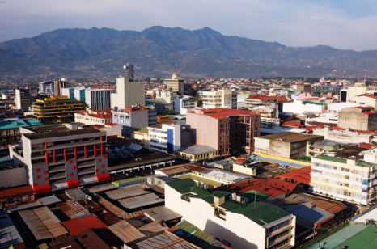
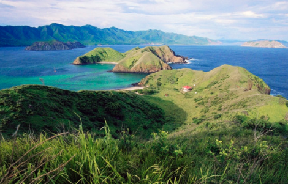
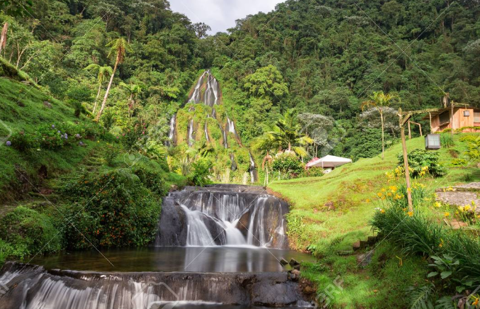
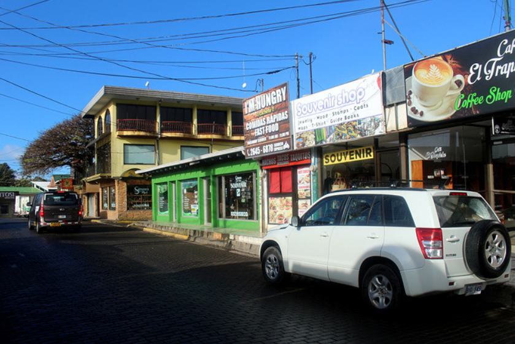

▶ 추천 장소
|  | 코스타리카는 중미의 특별한 보석과 같은 곳이다. 다른 소란스런 이웃나라들 가운데에서 오아시스처럼 조용한 나라라는 평판을 얻고 있지만 코스타리카는 안정적인 상태 이상의 것을 가진 나라이다. |
|  | 이 나라의 자연 경관, 야생환경, 그리고 발달된 보호구역은 전 세계적으로 관광객을 끌어 모으고 있으며 이러한 사실에 대해 스스로도 잘 알고 있다. 코스타리카 정부는 이 나라의 이미지를 환경 관광산업의 천국으로 남기려고 많은 노력을 하고 있으며 이러한 노력에 힘입어 코스타리카는 가장 적은 영향을 주면서 열대 지방을 경험할 수 있는 최고의 장소 중 하나가 되었다.그러나 무릎까지 차 오르는 개울을 몇 시간씩 터벅터벅 걷고 나서 세 발가락을 가진 게으른 원숭이를 보는 것이 이상적인 여행이 아닐지라도 코스타리카가 51,100 sq km 넓이의 볼 것이 하나도 없는 나라라고는 생각하지 말자. 많은 해안으로 이루어진 나라이기 때문에 당연히 그러하듯이 코스타리카는 많은 해변을 가지고 있고 이 지역에서 가장 멋진 서핑을 즐길 수 있는 나라 중 하나이며 누구나 게을러지도록 만드는 기후를 가지고 있다. |
|  | 산타 로사(Santa Rosa) 국립 공원은 코스타리카에서 가장 오래되었으며 가장 잘 개발된 공원 중 하나이다. 대부분의 산타 엘레나(Santa Elena) 공원을 차지하고 있는 이곳은 코스타리카의 북서쪽 모퉁이 끝에서 태평양을 향해 삐죽 튀어나와 있다. 공원 내에는 중미에서 가장 광대한 열대 건조 산림 지역이 있으며 멸종 위기의 바다 거북이들의 중요한 보금자리이기도 하다. 공원은 또한 역사적인 의의를 가지고 있기도 한데 급조된 코스타리카 군대가 1856년 윌리엄 워커를 물리친 목장이 여기에 있다. |
|  | 코스타리카 북서쪽에 있는 몬테베르데(Monteverde)라는 작은 마을은 1951년 퀘이커 교도들에 의해 세워졌으며 현재는 현지인들이나 다른 나라의 관광객 모두에게 유명하고 흥미로운 여행지가 되었다. 울창한 산림이나 오솔길들, 케찰, 치즈 공장, 나비 정원, 그리고 많은 미술관들이 볼거리들이다. |